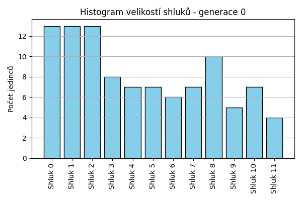
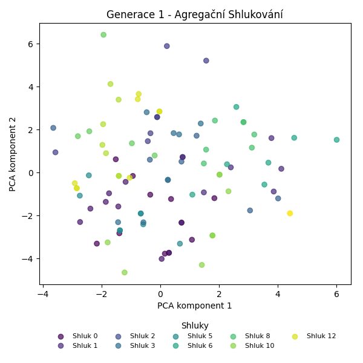
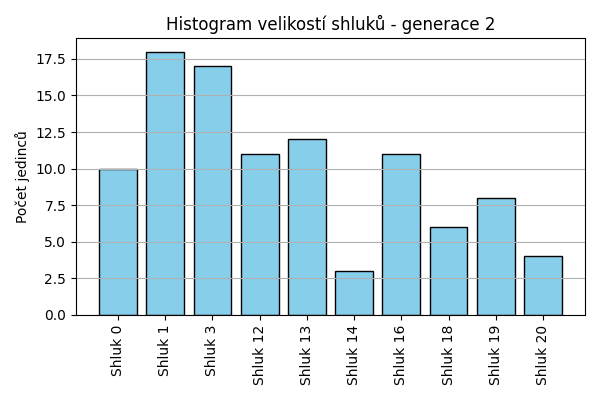
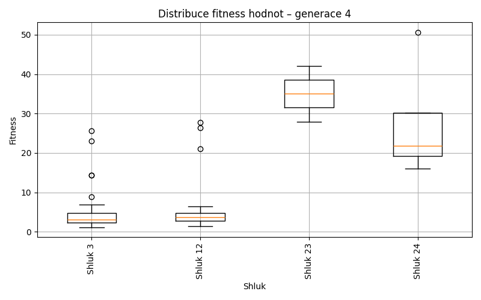
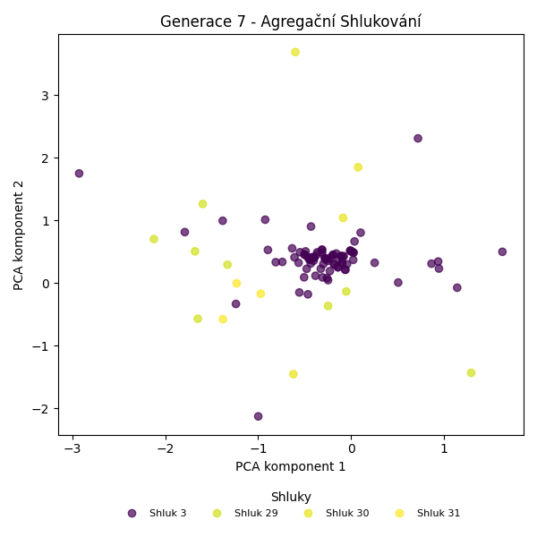
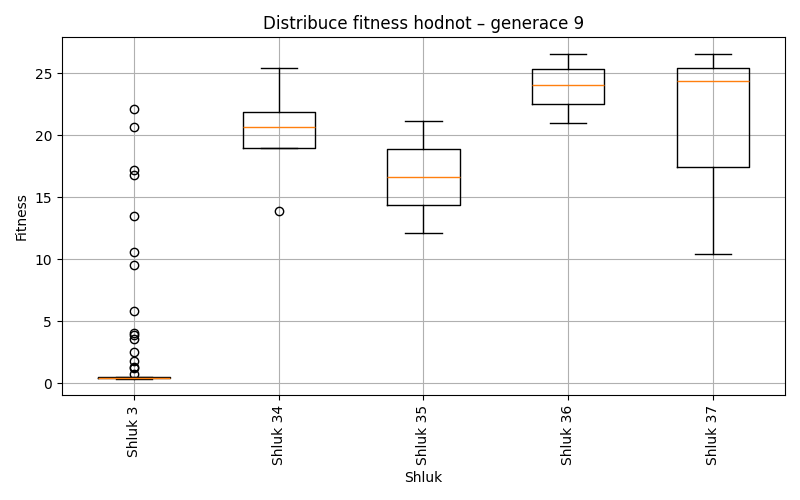
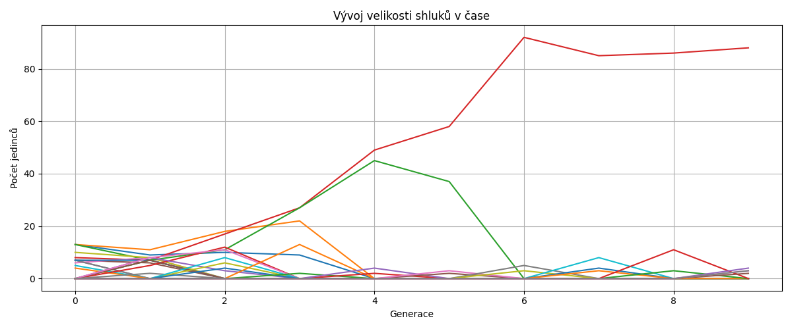
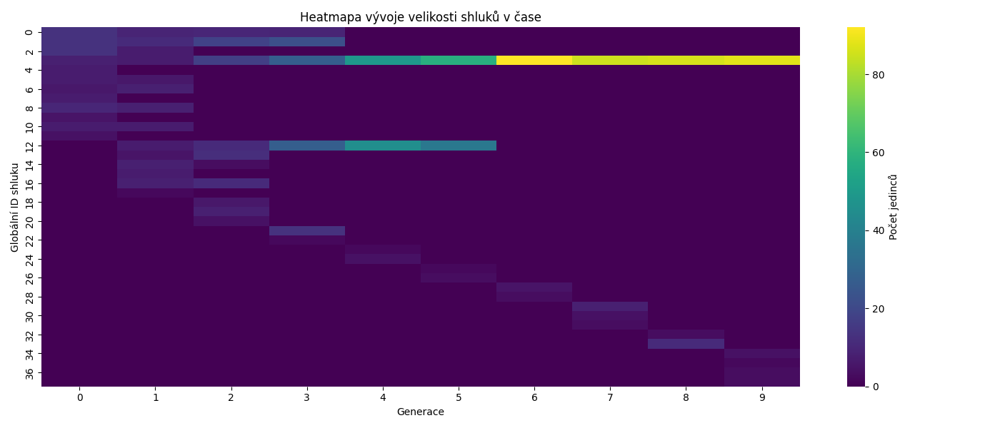

Agregační shlukování – Vývoj
Generace 0



Generace 1


Posun centroidů mezi generací 0 → 1:
- Shluk 0: 6.3050
- Shluk 1: 9.1816
- Shluk 2: 5.7485
- Shluk 3: 8.0536
- Shluk 4: 10.6184
- Shluk 5: 9.1955
- Shluk 6: 3.9419
- Shluk 7: 6.3738
- Shluk 8: 8.6066
- Shluk 9: 9.6819
- Shluk 10: 3.8892
- Shluk 11: 8.3333

Generace 2


Posun centroidů mezi generací 1 → 2:
- Shluk 0: 2.5924
- Shluk 1: 5.9156
- Shluk 2: 5.8973
- Shluk 3: 4.9197
- Shluk 4: 5.9732
- Shluk 5: 4.4982
- Shluk 6: 4.0514
- Shluk 7: 6.1611
- Shluk 8: 3.3310
- Shluk 9: 5.5852
Generace 3


Posun centroidů mezi generací 2 → 3:
- Shluk 0: 4.0593
- Shluk 1: 3.9831
- Shluk 2: 4.8881
- Shluk 3: 4.2928
- Shluk 4: 4.3942
- Shluk 5: 6.0371

Generace 4

Posun centroidů mezi generací 3 → 4:
- Shluk 0: 2.5196
- Shluk 1: 2.5462
- Shluk 2: 4.0449
- Shluk 3: 6.1866

Generace 5


Posun centroidů mezi generací 4 → 5:
- Shluk 0: 0.5403
- Shluk 1: 0.3884
- Shluk 2: 6.4593
- Shluk 3: 9.6749

Generace 6

Posun centroidů mezi generací 5 → 6:
- Shluk 0: 0.5498
- Shluk 1: 2.9637
- Shluk 2: 6.1548

Generace 7


Posun centroidů mezi generací 6 → 7:
- Shluk 0: 2.3165
- Shluk 1: 4.2563
- Shluk 2: 3.8820
Generace 8
Posun centroidů mezi generací 7 → 8:
- Shluk 0: 2.5910
- Shluk 1: 5.7335
- Shluk 2: 0.1809

Generace 9


Posun centroidů mezi generací 8 → 9:
- Shluk 0: 1.8650
- Shluk 1: 5.6654
- Shluk 2: 4.7964



